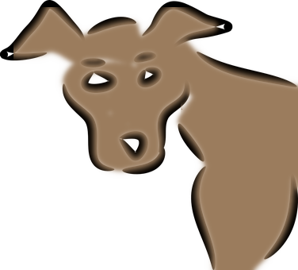

Essa ferramenta preenche uma seleção com a cor de frente atual. Se você pressionar Ctrl enquanto clica com a ferramenta de balde ativada, ela irá usar a cor de fundo. Dependendo de como as opções da ferramenta estão definidas, a ferramenta de preenchimento irá tanto preencher inteiramente a seleção, ou apenas as partes em que as cores são similares ao local em que você clicou. As opções da ferramenta também irão afetar a forma como a transparência é tratada..
A quantidade de preenchimento depende de qual limiar de preenchimento que você especificou. O limiar de preenchimento determina quanto diferente podem ser as cores para o preenchimento se espalhar (da mesma forma que na ferramenta de seleção contígua — a varinha mágica). O preenchimento começa no ponto onde você clica e espalha para fora até o valor da cor ou alfa se tornar “muito diferente”.
Quando você preencher objetos em uma camada transparente (como letras em uma camada de texto) com uma cor diferente que a anterior, você pode descobrir que uma borda com a cor antiga continua a contornar os objetos. Isso acontece devido a um baixo limiar de preenchimento na janela de opções do preenchimento. Com um baixa limiar de preenchimento, a ferramenta de balde não irá preencher pixels semi-transparentes, e eles não serão afetados pelo preenchimento mantendo as suas cores originais.
Se você deseja preencher áreas que estão totalmente transparentes, você precisa se certificar de que a opção de “trava” (na janela de camadas) está desmarcada. Se essa opção estiver marcada, apenas as partes não transparentes da camada serão preenchidas.
Existem várias formas para ativar a ferramenta:
-
A partir do menu da janela de imagem: → → .
-
Ícone da ferramenta de clonagem na caixa de ferramentas
-
o usando o atalho de teclado Shift+D.
-
Ctrl, semelhante às ferramentas de pintura, permite escolher cores circundantes na tela sem ter que mudar para a ferramenta Seletor de Cores.
-
Shift alterna entre preencher cores similares ou preencher toda a seleção a qualquer momento.
-
Alt alterna o tipo de preenchimento entre as cores de primeiro plano e de fundo.
Normally, tool options are displayed in a window attached under the Toolbox as soon as you activate a tool. If they are not, you can access them from the main menu through → → which opens the option window of the selected tool. The available tool options can also be accessed by double clicking the corresponding tool icon in the Toolbox.
- Modo, Opacidade
-
Veja ferramentas de pintura para obter ajuda com as opções que são comuns para todas essas ferramentas. Apenas opções que são específicas ao Preenchimento estão descritas aqui.
- Tipo de preenchimento
-
O GIMP providencia três tipos de preenchimento:
- Preenchimento com cor da Frente
-
define a cor de frente selecionada atualmente como a cor de preenchimento.
- Preenchimento com cor de fundo
-
define a cor de Fundo selecionada atualmente como a cor de preenchimento.
- Preenchimento com textura
-
define a textura selecionada atualmente como a cor de preenchimento. Você pode selecionar a textura a ser usada em uma lista.
Essa lista permite ao usuário selecionar uma das diversas texturas de preenchimento para usar na sua próxima operação de preenchimento. A forma na qual a lista é apresentada é controlada por quatro botões na parte inferior do seletor.
- Área afetada
-
-
Essa opção faz com que o GIMP preencha a seleção pré-existente ou toda a imagem. Uma outra forma de fazer a mesma coisa seria clicar e arrastar a cor de frente, cor de fundo ou textura, para dentro da seleção.
-
Essa é a configuração padrão: a ferramenta preenche a área que tiver uma cor próxima a do pixel que você clicou inicialmente. A similaridade de cores é definida pelo limiar de brilho, que você pode definir com um valor ou com uma posição do cursor.
-
Preencher por detecção de arte de linha:Este é um novo algoritmo no GIMP-2.10.10 que permite preencher áreas cercadas por “artes de linha”, tentando não deixar pixels não preenchidos perto das linhas, e fechando zonas potenciais.
A detecção de arte de linha também é conhecida como Smart Colorization. O autor descreve claramente os problemas que encontrou em https://girinstud.io/news/2019/02/smart-colorization-in-gimp/. As opções são descritas abaixo.
-
- Encontrando cores similares
-
Estas opções aparecem quando a opção Preencher cores similares está marcada:
-
A opção de preencher áreas transparentes oferece a possibilidade de preencher áreas com baixa opacidade.
-
Se você ativar essa opção, a recuperação não é calculada apenas a partir de valores da camada ativa, mas de todas as camadas visíveis.
O reticulado é completamente explicado no Glossário
-
Para entender o que são vizinhos diagonais, consulte Vizinhos-diagonais> na ferramenta Seleção por Cores Similares.
-
Consulte Anti-aliasing no Glossário.
-
O seletor de limiar define o nível em que a ponderação de cor é medida para os calcular os limites de preenchimento. Uma configuração com um valor maior preencherá mais partes de uma imagem multicolorida e o oposto, uma limiar menor irá preencher uma área menor.
-
Com essa opção você pode escolher qual componente da imagem o GIMP deve usar para calcular a similaridade e determinar as bordas de preenchimento.
Os componentes que você pode escolher são , , , , , e .
Não é fácil de entender essa opção. Você precisa escolher, por exemplo, o canal vermelho. E então você clica em qualquer pixel, e a ferramenta buscará por pixels contíguos similares ao pixel clicado, mas olhando apenas no canal vermelho de todos eles de acordo com a configuração de limiar. Um exemplo:
Imagem original: três faixas com degradês de cores puras. Vermelho (255, 0, 0), Verde (0, 255, 0), Azul (0, 0, 255). Nós vamos usar a ferramenta de balde de preenchimento com a cor magenta e o limiar definido em 15.
Imagem 1: Preencher por = Composto. Nós clicamos sucessivamente nas três faixas de cores. Cada faixa é preenchida de acordo com o limiar.
Imagem 2: Preencher por = Vermelho. Nós clicamos na faixa vermelha. A ferramenta busca por pixels contíguos que possuem um valor similar no canal vermelho, de acordo com o limiar definido. Apenas uma área estreita corresponde a esses padrões. Nas faixas verde e azul, o valor de pixels no canal vermelho é 0, muito diferente do valor de canal vermelho do pixel clicado: a cor não se espalha até eles.
Imagem 3: Preencher por = Vermelho. Nós clicamos na faixa verde. Aqui, o valor do pixel clicado no canal vermelho é 0. Todos os pixels nas faixas verde e azul possuem o mesmo valor de canal vermelho (0): todos eles foram pintados.
-
- Opções da ferramenta de “lápis”
-
Estas opções aparecem quando a opção Preencher cores similares está marcada:
Figura 14.52. Exemplo de “Clonagem em perspectiva”

A ferramenta Balde de tinta aplicada com clique-e-arraste com as opções padrão. Elas não se adaptam bem a esta imagem, especialmente nas sobrancelhas que estão quase apagadas.
-
Source: by default, information for line art computation is taken from All visible layers. You can also select the Selected layer, the Layer below the selected one, or the Layer above the selected one as the source.
-
Preencher áreas transparentes: preenche regiões completamente transparentes.
-
Limiar de detecção de arte de linha: limiar para detectar contorno (valores mais altos detectarão mais pixels).
-
- Line Art Closure
-
Estas opções aparecem quando a opção Preencher cores similares está marcada:
-
Comprimento máximo de lacuna: lacuna máxima (em pixels) na arte de linha que pode ser fechada.
-
Manual closure in fill layer: when enabled, consider pixels of the selected line art source layer that are using the selected fill color as line art closure.
This setting is only enabled when the line art source is Layer below the selected one, or Layer above the selected one.
When your line art sketch has holes, you can fill these holes with a brush in the fill color on a layer above or below it, before using bucket fill on your color layer. Especially on larger images this can be faster than selecting All visible layers as source.
Layer below the selected one would be most useful when you are coloring a scanned sketch, while Layer above the selected one can be used when you are sketching yourself and filling the colors below the sketch.
-
- Preencher por
-
Estas opções aparecem quando a opção Preencher cores similares está marcada:
-
Tamanho máximo de crescimento: número máximo de pixels crescidos sob a arte de linha. Aumentar este valor torna as linhas mais finas.
Para melhorar as sobrancelhas no exemplo, Tamanho máximo de crescimento é reduzido para 1.
-
Pressão: Pressione com mais força para tornar o pincel maior.

-
Stroke borders: stroke fill borders with the stroke options of the paint tool selected in the dropdown below.
-